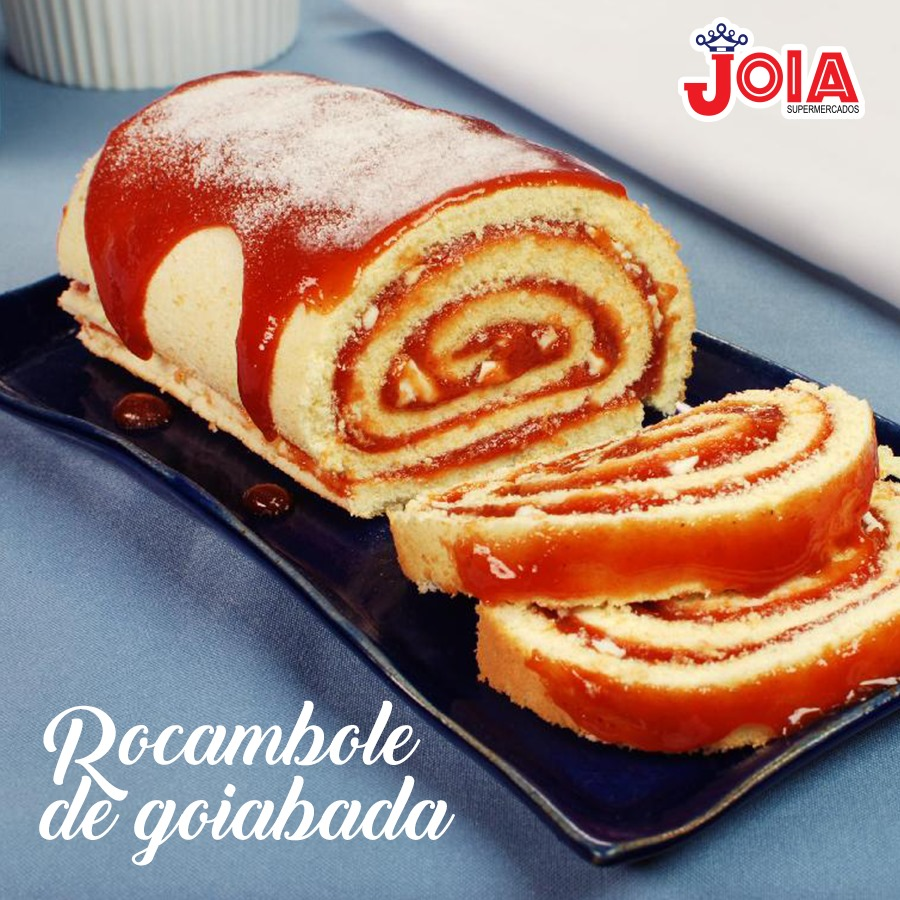

Rocambole de goiabada
Ingredientes:

- 3 claras em neve.
- 3 gemas.
- ½ xícara de água.
- 1 xícara de açúcar.
- 1 xícara de farinha de trigo.
- 1 colher de chá de fermento.
- 300 g de goiabada derretida.
Modo de preparo
- Bater na batedeira as claras em neve, após jogar a gemas, a água, em seguida o açúcar, o trigo e por último o fermento.
- Colocar a massa em forma retangular grande untada em forno pré-aquecido.
- Assim que retirar do fogo colocar a massa sobre um pano de prato polvilhado com açúcar (ou papel manteiga).
- Enrole imediatamente e reserve.
- Derreta a goiabada e aplique, enrole novamente e polvilhe açúcar ou cubra com chantilly.